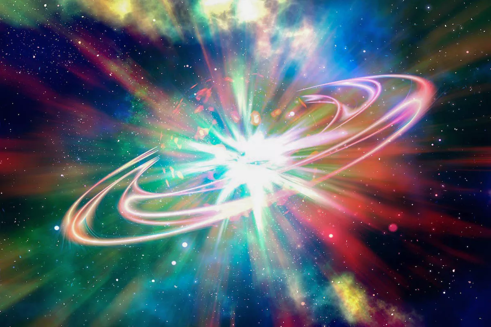
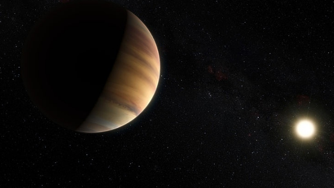

Descobertas Importantes
As descobertas astronômicas mais importantes:
- O Big Bang:
- O primeiro exoplaneta:
- Os Buracos Negros:
Até os tempos de Hubble, o modelo cosmológico era estacionário, ou seja, considerava-se que o universo era estático — algo que até Albert Einstein defendia na época. Quando a expansão do universo foi descoberta, estudos levaram os astrônomos à irremediável conclusão de que o cosmos um dia foi mais compacto que nos tempos atuais.
Hubble não foi o único astrônomo de sua época a descobrir que o universo se expandia. Alguns outros em trabalhos independentes chegaram às mesmas conclusões. Entre, estava Georges Lemaître, um padre e físico — ele sugeriu que se a expansão do universo pudesse ser projetada de volta no tempo, ele ficaria menor. Quanto mais tempo no passado, menor o universo, até que em algum momento toda a massa do universo estava concentrada em um único ponto, um "átomo primitivo".
A ideia não foi aceita de imediato. Na verdade, demorou um pouco até que os astrônomos aceitassem a sugestão de que o universo teria um início, já que o consenso era o de que a matéria é eterna. O fato de Lemaître ser um padre não ajudou, pois os cientistas achavam que um “início de tudo” remetia à ideia religiosa de criação do universo.
Lemaître defendeu sua hipótese enquanto outros criavam modelos cosmológicos diferentes. Foi só em 1948 que George Gamow, um defensor da proposta de Lemaître, publicou um artigo com Ralph Alpher e Robert Herman descrevendo a nucleosíntese primordial, ou seja, o período de 10 segundos a 20 minutos após o início do universo. Entretanto, foi Fred Hoyle, que defendia outra hipótese, quem disse "essa ideia big bang" para se referir à teoria dos “rivais” durante uma transmissão de rádio da BBC. O Big Bang foi convencendo a comunidade científica em um processo muito lento, mas só veio a ser confirmado por causa de uma outra descoberta: a radiação cósmica de fundo em micro-ondas.
Em uma noite de inverno, a observação do estudante de astronomia Didier Queloz no observatório de Haute-Provence, na França, foi atrapalhada pela chuva. Ele decidiu então ir à biblioteca para desenvolver um programa capaz de analisar os dados que ele já havia coletado. Era janeiro de 1995 e outros grupos de astrônomos também procuravam o mesmo que ele — um planeta na órbita ao redor de uma estrela que não o Sol, ou seja, um exoplaneta.
Seus dados sugeriam que uma estrela brilhante chamada 51 Pegasi tremia ligeiramente, o que era justamente o indício que Queloz estava procurando. Esse movimento estelar poderia indicar a presença de um exoplaneta, a apenas 47,9 anos-luz da de distância da Terra. A estrela é uma anã amarela com 7,5 bilhões de anos, um pouco mais velha que o Sol, e também ligeiramente mais massiva. Em 6 de outubro de 1995, Michael Mayor e Didier Queloz publicaram na revista Nature a descoberta do exoplaneta 51 Pegasi B.
É difícil dizer quem descobriu de fato o primeiro exoplaneta, porque na época alguns conceitos ainda não haviam sido muito bem definidos. Além disso, o primeiro candidato a exoplaneta, encontrado por Gordon Walker no finalzinho de 1979, só veio a ser comprovado 2003. Naquela época e nos anos 1980, a comunidade científica via com “maus olhos” qualquer um que se aventurasse a procurar planetas ao redor de estrelas. Por isso, o Prêmio Nobel da Física pela descoberta do primeiro planeta ao redor de uma estrela do tipo solar foi para Queloz e Mayor.
É difícil determinar quem “descobriu” os buracos negros, pois, como já vimos, foi Einstein quem escreveu a teoria que “permite” a existência desses objetos. Muita teoria foi produzida depois por nomes importantes como Karl Schwarzschild, Subrahmanyan Chandrasekhar, e muitos outros, mas foi Roger Penrose quem mostrou em 1965, dez anos após a morte de Einstein, que a formação de buracos negros é definitivamente uma consequência direta da relatividade geral, então era certo que em algum lugar eles existiriam. (veja abaixo a primeira imagem real de um buraco negro).